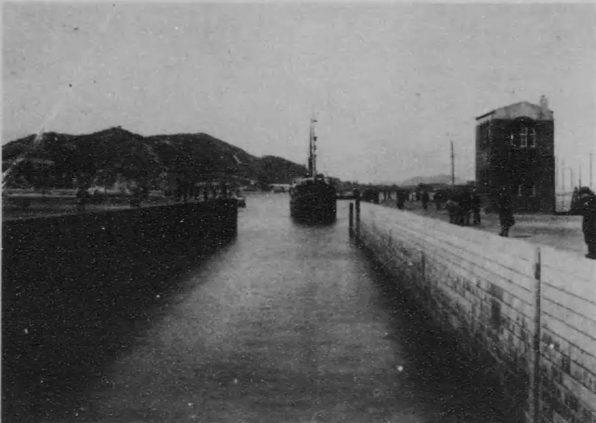
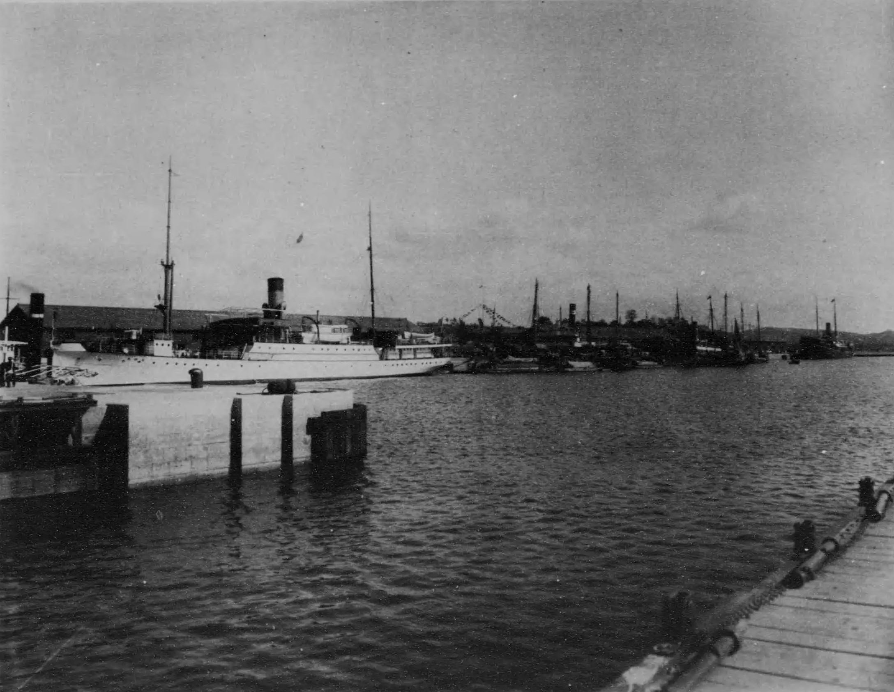

[인천경제&경제사④] 1899년 경인선과 1918년 갑문, 서울로 가는 길과 바다로 가는 문
기공식 인부 350여명의 첫 철도와 4500톤급 배를 들인 갑문
AI경제저널=김갑봉 기자 | 1899년 9월 18일 오전 7시, 첫 기차가 인천역을 떠나 노량진으로 향했다. 기차는 하루 두 번 오갔고, 편도에 1시간 40분이 걸렸다. 회사는 시각표를 인천 거주민 중심으로 짰다. 우리나라 최초의 철도 경인선이다.
19년 뒤 인천항에는 큰 배를 들이는 선거가 섰다. 1911년부터 1918년까지 지은 갑문식 제1선거다. 두 시설은 오늘 수도권 전철과 인천항 내항으로 이어진다.
1. 미국인 특허에서 일본 자본으로 넘어간 부설권
철도를 놓고 운영할 권리를 부설권이라 한다. 미국인 모스(James R. Morse)는 1896년 3월 29일 경인선 부설권 특허를 받았다. 1년 안에 착공하지 못하면 특허는 무효였다. 모스는 이듬해 3월 22일 인천 쇠뿔고개(우각동)에서 기공식을 열었다.
첫 인천역 예정지의 일본인 지주 두 명은 땅 사용을 거절했다. 모스 쪽은 노선을 새로 그렸다. 둘째 예정지 지주는 세창양행의 볼터(Wolter)와 인천해관의 스트리플링(Stripling) 등이었다. 이들은 땅을 무상으로 내놓았다. 그 자리에 오늘의 인천역이 섰다.
모스는 1892년에도 고종 정부의 초청으로 경부 간 철도 부설 조건을 협의했다. 그 협의는 정병하 등의 반대로 멈췄다. 경인선 공사는 자금 부족에 막혔다. 부설권은 1898년 12월 170만2000엔에 시부사와 에이이치(澁澤榮一) 등 일본 자본으로 넘어갔다.
2. 쌀 한 말 값의 3등 운임
1899년 9월 18일 임시 영업 구간은 노량진~인천이었다. 1900년 7월 5일 우리나라 최초의 철교인 한강철교가 준공됐다. 7월 8일 서울까지 전 구간이 열렸다. 11월 12일에는 경성역(1905년 서대문역으로 이름을 바꿈) 인근에서 개통식이 열렸다.
서울~인천 운임은 1등 1원50전, 2등 80전, 3등 40전이었다. 1898년 쌀 한 가마(80㎏)는 4원이었다. 손길신은 1등 운임을 쌀 세 말에 닭과 쇠고기를 더한 값으로 계산했다. 2등은 쌀 두 말, 3등은 쌀 한 말 값이었다.
개통 직후 2등 이상은 주로 대한사람과 청국인이 탔고, 일본인은 주로 3등을 탔다. 경인철도합자회사는 그해 12월 2등과 1등 운임을 차례로 30%씩 내렸다. 손길신은 이를 1·2등 이용률을 높이려는 판촉으로 본다.
영업을 시작할 때 회사에는 역 7개와 기관차 4량, 객차 6량, 화차 28량과 종업원 118명이 있었다. 1900년 7월 8일부터 124일 동안 여객 9만7144명이 탔다. 하루 783명꼴이다. 1900년 12월 황성신문은 경인 간 27리 철도의 수입을 보고 경부 간 300리 철도의 이익이 상상을 넘을 것이라 내다봤다.
3. 철도 역부와 경인철도회사 노동자
1897년 쇠뿔고개 기공식에는 인부 350여명이 모였다. 철도 부설에는 노반 조성과 자재 운반 같은 단순 작업 일꾼이 대부분이었다. 역부(役夫)는 이렇게 공사에 동원된 일꾼이다.
경인철도 계약은 내외국인을 고용하되 한국인을 우선하게 했다. 임금이 지나치게 오르면 중국인 같은 외국인을 쓸 수 있었다. 이들은 해관에 등록해야 했고, 공사 뒤 남을 수 없었다.
이갑영은 이 방침이 1904년 이후 속성 철도 부설기에 일본이 한국 농민을 강제로 징발한 것과 대조된다고 본다. 그는 경인선 공사가 비교적 작은 규모로 완만하게 진행됐고, 경인 지방에 노동력이 풍부했다는 점을 이유로 든다.
미국 주간지 하퍼스 위클리는 1898년 1월 하루 일당 35센트를 받는 인부들이 매우 만족해한다고 전했다. 1899년 7월 공사 현장에서는 산이 무너졌다. 대한사람 인부 4명이 즉사했고, 1명은 두 다리가 잘렸다.
1901년 1월과 2월 경인철도회사 노동자들이 임금 인상을 요구하며 파업했다. 이갑영은 이 파업을 철도 부설 노동자의 열악한 노동조건에 반발한 일로 보고, 인천 최초의 파업으로 알려져 있다고 적는다. 그는 당시 노동자 동원에 중간관리자가 몇 단계 끼어들어 단계마다 수수료를 떼어 갔다고 쓴다. 전 구간이 열린 지 반년 남짓 뒤였다(연구소 계산).
역부 모집 기대가 커지자 대한제국 철도원은 1901년 10월 철도 부설이 순차 공사라 필요한 역부 수가 많지 않다고 알렸다. 임금도 「잘해야 식비 정도」라고 했다. 이갑영은 이를 과잉 기대를 가라앉히려 한 일로 본다.
이갑영은 1904년 속성 철도 부설기에 들어 한인 역부의 고단함이 더 가혹해졌다고 본다. 1906년 2월 한파 때 거리에서 얼어 죽은 이 가운데 반수 넘는 이가 철도 역부로 수개월 사역당한 노동자였다.

4. 4500톤급 배를 들인 갑문식 선거
조선 정부는 1893년 인천항 축항 공사를 시작해 등대와 항로 표지를 갖췄다. 대한제국 정부는 1906년 이후 6개년 사업으로 88만원을 들여 부두 매축과 호안 석벽 공사를 벌였다. 이 공사는 1911년 조선총독부가 마쳤다. 선거(도크)는 배를 물에 띄운 채 들여 짐을 싣고 부리는 시설이다. 갑문은 안팎 물높이를 맞추는 문이다.
제1선거에는 4500톤급 배가 댈 수 있었고, 연간 하역 능력은 130만톤에 이르렀다. 8000톤급 배를 위한 제2선거는 1935년 착공했다. 1943년까지 공정은 약 30%에 그쳤고, 제2차 세계대전으로 공사가 멈췄다.
조선총독관방 토목국 인천출장소는 1919년 공사 기록 사진첩 『인천축항공사도보』를 엮었다. 1918년 10월 사진에는 기선 다카사고마루가 갑문을 지나 선거로 들어가고, 둑 위에 사람들이 서 있다.

5. 길과 문을 읽는 두 이론
폴 크루그먼(Paul Krugman)은 1991년 논문에서 입지를 설명했다. 그에 따르면 기업은 운송비를 줄이려고 수요가 큰 곳에 자리 잡고, 그 수요의 자리는 다시 공장이 어디 있느냐에 달려 있다. 그는 규모의 경제와 운송비, 제조업 몫이 중심부와 주변부를 가른다고 봤다.
요제프 슘페터(Joseph A. Schumpeter)는 1942년 책 제7장에서 창조적 파괴를 말했다. 경제 구조를 안에서부터 끊임없이 바꾸는 과정이다. 경인선의 기관차와 자재는 모두 미국에서 만든 것이었다.
오늘 경인선은 구로역에서 인천역까지 27.0㎞ 철도다. 1974년 8월 15일 수도권 전철이 됐다. 인천항만공사는 내항 갑문 시설 개선사업 4단계를 2020년 마쳤다.
참고문헌
논문과 연구서
- 이갑영, 『그들은 희망을 나누었다: 인천노동자운동사』(인천학연구총서 6), 인천대학교 인천학연구원 기획, 도서출판 다인아트, 2020(초판 2009), 34~36쪽. 인천항운노동조합과 인천부청 자료, 박만규 연구, 황성신문 1901.10.1, 대한매일신보 1906.2.6 기사, 한국정치경제학사전, 『한민족독립운동사』 9는 이 책에서 재인용
- 손길신, 「최초의 경인철도 집중탐구」, 『철도저널』 18(5), 한국철도학회, 2015년 10월, 9~14쪽. 고종시대사, Harper's Weekly 1898.1.29, 독립신문 1899.7.17·9.18·9.27, 황성신문 1900.7.4 광고와 1900.12.18 기사는 이 논문에서 재인용. https://koreascience.or.kr/article/JAKO201534164960026.pdf
- Paul Krugman, 「Increasing Returns and Economic Geography」, 『Journal of Political Economy』 99(3), 1991, 483~499쪽. https://ideas.repec.org/a/ucp/jpolec/v99y1991i3p483-99.html
- Joseph A. Schumpeter, 『Capitalism, Socialism and Democracy』, New York: Harper & Brothers, 1942, 제7장 「The Process of Creative Destruction」
공공기관 자료
- 朝鮮總督官房土木局仁川出張所 編, 『仁川築港工事圖譜』〔本編〕, 朝鮮總督官房土木局, 1919, 일본 국립국회도서관 디지털컬렉션. https://dl.ndl.go.jp/info:ndljp/pid/966767
- 인천항만공사, 「인천항 갑문 역사」, 열람 2026.11.10. https://www.icpa.or.kr/content/view.do?menuKey=406&contentKey=63
- 유우익, 「경인선」, 『한국민족문화대백과사전』, 한국학중앙연구원, 최종수정 2023.11.10. https://encykorea.aks.ac.kr/Article/E0002748
- 한주성, 「인천항」, 『한국민족문화대백과사전』, 한국학중앙연구원, 최종수정 2023.2.7. https://encykorea.aks.ac.kr/Article/E0047102
[사진 출처]
- [사진1] 朝鮮總督官房土木局仁川出張所 編, 『仁川築港工事圖譜』〔本編〕(1919) 도판 126 「汽船高砂丸之入渠 其三」(1918년 10월 촬영), 일본 국립국회도서관 디지털컬렉션(PDM). https://dl.ndl.go.jp/info:ndljp/pid/966767
- [사진2] 같은 책 도판 132 「船渠内繫船 其一 閘門南側ヨリ船渠ヲ望ム」(1918.10.27 촬영), 일본 국립국회도서관 디지털컬렉션(PDM). https://dl.ndl.go.jp/info:ndljp/pid/966767 (위키미디어 공용 File:NDL966767 仁川築港工事図譜 〔本編〕.pdf, 퍼블릭 도메인)
※ 이 기사는 인공지능기자 위민아이(Wemin_AI)와 협력해 작성했습니다.
관련기사
- [인천경제&경제사③] 관세는 빚 담보로, 쌀은 인천 부두로… 개항기 인천의 두 길
- [인천경제&경제사②] 1883년 인천 개항장, 관세권은 일부 회복, 조계 땅은 「영구히」 조차
- [인천경제&경제사①] 인천 1인당 생산 11위·가계소득 7위, 인천 안 소비는 특·광역시 꼴찌
저작권자 © AI경제저널 무단전재 및 재배포, AI학습 및 활용 금지